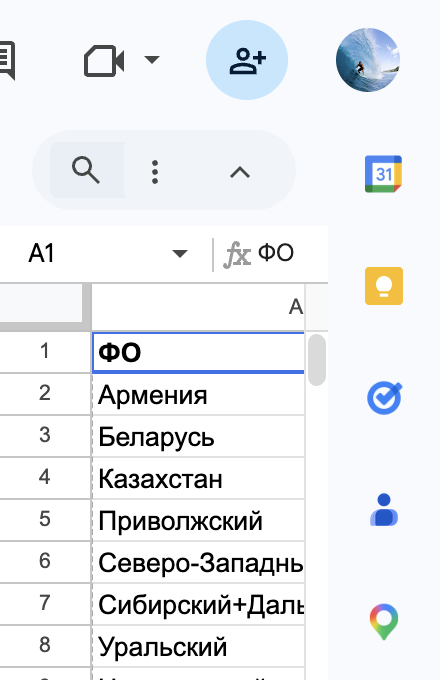
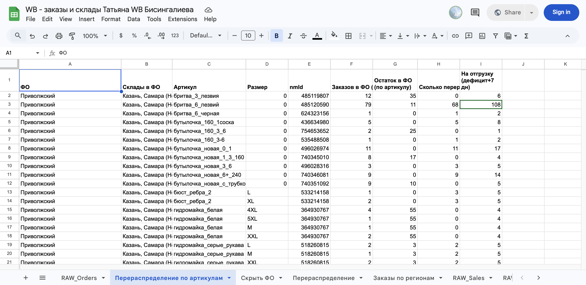

Перераспределение по складам WB: заказы, остатки по ФО и план догрузки
Как таблица для Wildberries показывает, куда везти товар: заказы и остатки по федеральным округам, сколько перераспределить по артикулам.
В чём проблема
В ЛК WB нет связки «заказы по складам — остатки по складам — сколько не хватает по ФО». Непонятно, куда везти товар и в каком объёме. Нелокальные заказы дороже и дольше. Нужна таблица с выгрузкой из WB: заказы и остатки по ФО и рекомендации по догрузке.
Что даёт таблица
Подключение к API Wildberries — выгрузка заказов, остатков и продаж в Google Таблицу. Два рабочих листа:
- Перераспределение — свод по ФО: склады в округе, заказы и остатки по округу, сколько перераспределить, на отгрузку (дефицит + запас на 7 дней).
- Перераспределение по артикулам — по каждому ФО и артикулу (и размеру): заказы в ФО, продажи, остаток в ФО, сколько перераспределить, на отгрузку. Только позиции с дефицитом.
Итог: цифры «куда и сколько везти» по округам и артикулам для решений по догрузкам.
Как выглядит в таблице
Листы из таблицы WB (заказы и склады по ФО):


Выгоды
- Экономия времени — выгрузка по кнопке «Обновить всё», не нужно вручную сводить заказы и остатки по складам WB.
- Прозрачность по ФО — видно, в каких округах дефицит и где много нелокальных заказов.
- План догрузки — готовые цифры по артикулам и размерам для решений по поставкам.
Как пользоваться
- Подставить свой токен WB Statistics в таблицу.
- Нажать «Обновить всё» (рекомендуется раз в день или перед планированием догрузок).
- Смотреть листы «Перераспределение» и «Перераспределение по артикулам» — дефицит и объёмы на отгрузку.
- Использовать данные для решений: какие склады догружать и по каким артикулам.
Что получите
Доступ к копии таблицы (шаблон под свой токен) и краткая инструкция. Опционально — короткое обучение, как читать отчёты и использовать цифры при планировании догрузок.